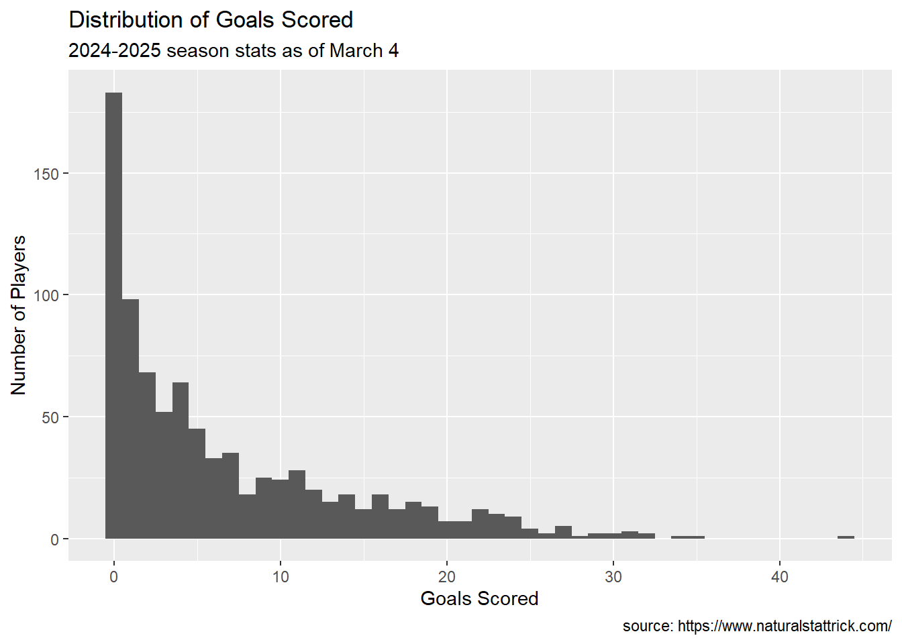
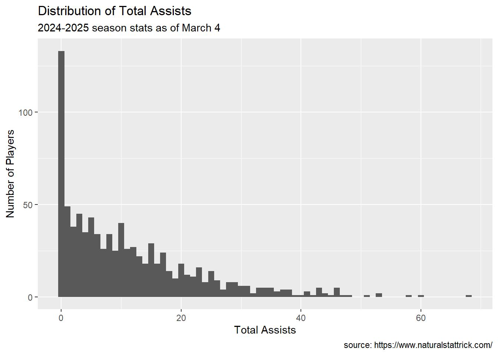
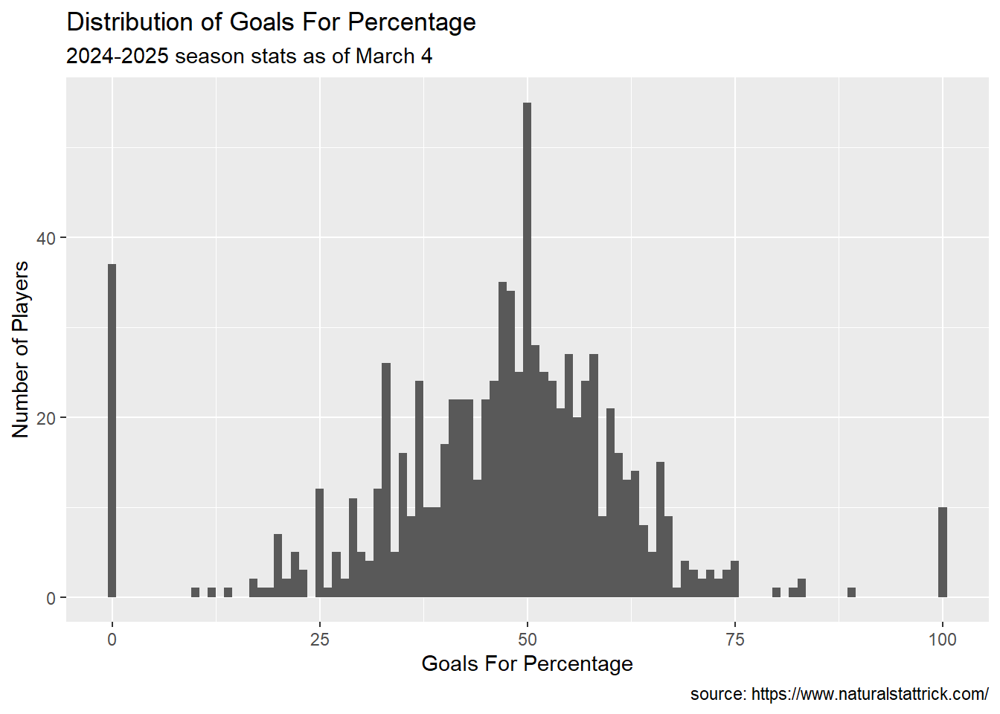
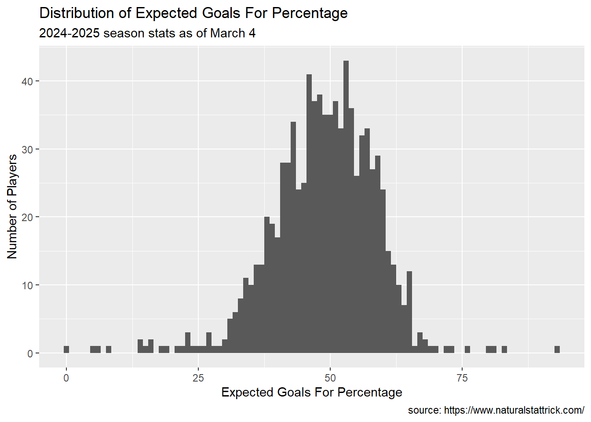
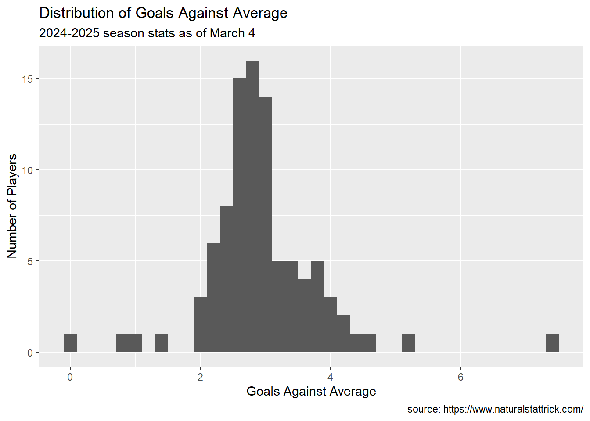
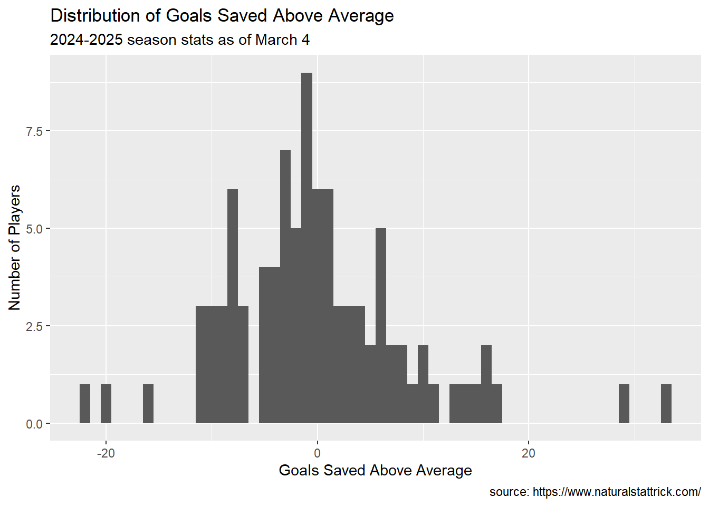
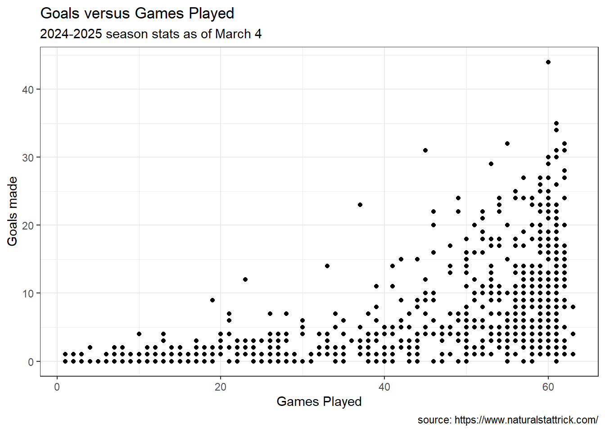

In this assignment, we are going to practice creating visualizations for tabular data.
SCENARIO
We are going to use NHL data on the season to date to create data driven ballots for several key awards. The awards we will consider are:
Hart Memorial Trophy
Awarded to the “player judged most valuable to his team.” This isn’t necessarily the best overall player, but rather the one who contributes most significantly to his team’s success.
Vezina Trophy
Presented to the goaltender “adjudged to be the best at this position.” NHL general managers vote on this award.
James Norris Memorial Trophy
Awarded to the defenseman who demonstrates “the greatest all-around ability” at the position.
Calder Memorial Trophy
Given to the player “adjudged to be the most proficient in his first year of competition.” This is essentially the rookie of the year award.
Frank J. Selke Trophy
Awarded to the forward who best excels in the defensive aspects of the game.
Lady Byng Memorial Trophy
Presented to the player who exhibits “the best type of sportsmanship and gentlemanly conduct combined with a high standard of playing ability.”
Note that I’ve eliminated the awards that are determined by raw counting statistics (most goals, most points). The awards above are all based on votes from NHL media and executives, and the criteria are at least somewhat subjective.
Here is the goal:
For each award, create your ballot of five players, ranked from 1 (your first choice) to 5 (your fifth choice). For each ballot, provide one to three visualizations that explain and justify your ballot.
THE DATA
At minimum, we will use the data from naturalstattrick.com for player statistics for the season to date (Oct 2024 to March 2025). You can find the Data Dictionary here
ggplot(Individual.Skater, aes(x=Total.Points))+geom_histogram(binwidth =1)+labs(x ="Total Points",y ="Number of Players",caption ="source: https://www.naturalstattrick.com/",title ="Distribution of Total Points",subtitle ="2024-2025 season stats as of March 4")
Code
ggplot(Individual.Skater, aes(x=Goals))+geom_histogram(binwidth =1)+labs(x ="Goals Scored",y ="Number of Players",caption ="source: https://www.naturalstattrick.com/",title ="Distribution of Goals Scored",subtitle ="2024-2025 season stats as of March 4")

Code
ggplot(Individual.Skater, aes(x=Total.Assists))+geom_histogram(binwidth =1)+labs(x ="Total Assists",y ="Number of Players",caption ="source: https://www.naturalstattrick.com/",title ="Distribution of Total Assists",subtitle ="2024-2025 season stats as of March 4")

On Ice Stats for Skaters
Code
ggplot(OnIce.Skater, aes(x=CF.))+geom_histogram(binwidth =1)+labs(x ="Corsi Percentage",y ="Number of Players",caption ="source: https://www.naturalstattrick.com/",title ="Distribution of Corsi Percentage",subtitle ="2024-2025 season stats as of March 4")
Code
ggplot(OnIce.Skater, aes(x=as.numeric(GF.)))+geom_histogram(binwidth =1)+labs(x ="Goals For Percentage",y ="Number of Players",caption ="source: https://www.naturalstattrick.com/",title ="Distribution of Goals For Percentage",subtitle ="2024-2025 season stats as of March 4")
Warning in FUN(X[[i]], ...): NAs introduced by coercion
Warning: Removed 18 rows containing non-finite outside the scale range
(`stat_bin()`).

Code
ggplot(OnIce.Skater, aes(x=as.numeric(xGF.)))+geom_histogram(binwidth =1)+labs(x ="Expected Goals For Percentage",y ="Number of Players",caption ="source: https://www.naturalstattrick.com/",title ="Distribution of Expected Goals For Percentage",subtitle ="2024-2025 season stats as of March 4")

Stats for Goalies
Code
ggplot(Goalie, aes(x=SV.))+geom_histogram(binwidth = .01)+labs(x ="Save Percentage",y ="Number of Players",caption ="source: https://www.naturalstattrick.com/",title ="Distribution of Save Percentage",subtitle ="2024-2025 season stats as of March 4")
Code
ggplot(Goalie, aes(x=GAA))+geom_histogram(binwidth = .2)+labs(x ="Goals Against Average",y ="Number of Players",caption ="source: https://www.naturalstattrick.com/",title ="Distribution of Goals Against Average",subtitle ="2024-2025 season stats as of March 4")

Code
ggplot(Goalie, aes(x=GSAA))+geom_histogram(binwidth =1)+labs(x ="Goals Saved Above Average",y ="Number of Players",caption ="source: https://www.naturalstattrick.com/",title ="Distribution of Goals Saved Above Average",subtitle ="2024-2025 season stats as of March 4")

Vezina Trophy
Presented to the goaltender “adjudged to be the best at this position.” NHL general managers vote on this award.
Code
goalie_m1 <-lm(Saves~GP, data=Goalie)
The red line on the graph shows where an approximate cut-off point could be. We want the players above the line.
Code
ggplot(data=Goalie, aes(x=GP, y=Saves))+geom_point()+theme_bw()+geom_abline(aes(intercept=goalie_m1$coefficients["(Intercept)"],slope=goalie_m1$coefficients["GP"]))+geom_hline(yintercept=1100, color="red")+labs(x="Games Played",y="Saves made by the goalie",caption ="source: https://www.naturalstattrick.com/",title="Saves Made per Games Played",subtitle ="2024-2025 season stats as of March 4")
Code
goalie_m2 <-lm(Saves~Shots.Against, data=Goalie)
The red line on the graph shows where an approximate cut-off point could be. We want the players above the line.
Code
ggplot(data=Goalie, aes(x=Shots.Against, y=Saves))+geom_point()+theme_bw()+geom_abline(aes(intercept=goalie_m2$coefficients["(Intercept)"],slope=goalie_m2$coefficients["Shots.Against"]))+geom_hline(yintercept=1100, color="red")+labs(x="Shots Against",y="Saves made by the goalie",caption ="source: https://www.naturalstattrick.com/",title="Saves Made per shots against",subtitle ="2024-2025 season stats as of March 4")
ggplot(data=Goalie, aes(x=GP, y=SV.))+geom_point()+theme_bw()+geom_abline(aes(intercept=goalie_m3$coefficients["(Intercept)"],slope=goalie_m3$coefficients["GP"]))+#geom_hline(yintercept=1100, color="red")+labs(x="Games Played",y="% Shots against that were saves",caption ="source: https://www.naturalstattrick.com/",title="% Saves Made per Games Played",subtitle ="2024-2025 season stats as of March 4")
I want to see who are the top 5 in GP, Saves, and SV. Top 5 in GP:
Player GP Shots.Against Saves SV.
1 Akira Schmid 1 12 12 1.000
2 Erik Portillo 1 29 28 0.966
3 Nico Daws 5 88 85 0.966
4 Marcus Hogberg 7 151 143 0.947
5 Connor Hellebuyck 46 1262 1170 0.927
Vezina ballot
Once the data is filtered by > 40 games played and > 1100 saves, it seems like the best discerning feature would be % Saves (if I understand the data correctly). Once those are all sorted out, the top 5 players below will be on my Vezina Trophy ballot.
Player GP Shots.Against Saves SV. Rank
1 Connor Hellebuyck 46 1262 1170 0.927 1
2 Andrei Vasilevskiy 48 1335 1232 0.923 2
3 Mackenzie Blackwood 44 1229 1125 0.915 3
4 Igor Shesterkin 44 1263 1144 0.906 4
5 Ilya Sorokin 45 1237 1117 0.903 5
Hart Memorial Trophy
Awarded to the “player judged most valuable to his team.” This isn’t necessarily the best overall player, but rather the one who contributes most significantly to his team’s success.
It seems like lots of games played plus lots of goals made would be a nice place to start. People towards the top right of the graph below should be taken into consideration for significant contribution.
Code
ggplot(Individual.Skater, aes(x=GP, y=Goals))+geom_point()+theme_bw()+labs(x="Games Played",y="Goals made",caption ="source: https://www.naturalstattrick.com/",title="Goals versus Games Played",subtitle ="2024-2025 season stats as of March 4")

That being said, not just the folks making the goals should be considered. Defense should be considered. One way to assess this might be with the OnIce.Skater data, using the GF statistics (count of goals for that player’s team while that player is on the ice).
Now I want to see a scatter plot with names in it.
When looking at this graph, the best contendors will be located in the top right.
Code
ggplot(hartmemorial, aes(x=GP, y=GF))+geom_point()+theme_bw()+geom_text(aes(label=Player), hjust=0.5, vjust=-0.5, size=2)+labs(title ="20 Contenders for the Hart Memorial Award",x="Number of games played",y="Count of goals while player is on ice",caption ="source: https://www.naturalstattrick.com/",subtitle ="2024-2025 season stats as of March 4")
Hart Memorial ballot
After consideration, it seems to me that there is not an appreciable difference between playing 54 and 62 games, so that will not be considered. The only factor I will consider needed is GF, because this already sorts out players who have only played a small number of games. Therefore I will take the top 5 in the GF category:
Player GF GP Rank
1 Nathan MacKinnon 116 61 1
2 Leon Draisaitl 109 60 2
3 Nikita Kucherov 109 57 3
4 Cale Makar 109 61 4
5 Jack Eichel 106 59 5
Source Code
---title: "Assignment 5"subtitle: "Hockey stuff"author: "Sharon"date: "2025-03-06"format: htmlcategories: [Assignment, DataViz]image: kidhockey.jpgcode-fold: truecode-tools: truedescrption: "Hockey data stuff"---# OVERVIEWIn this assignment, we are going to practice creating visualizations for tabular data. # SCENARIOWe are going to use NHL data on the season to date to create data driven ballots for several key awards. The awards we will consider are:## Hart Memorial TrophyAwarded to the "player judged most valuable to his team." This isn't necessarily the best overall player, but rather the one who contributes most significantly to his team's success.## Vezina TrophyPresented to the goaltender "adjudged to be the best at this position." NHL general managers vote on this award.## James Norris Memorial TrophyAwarded to the defenseman who demonstrates "the greatest all-around ability" at the position.## Calder Memorial TrophyGiven to the player "adjudged to be the most proficient in his first year of competition." This is essentially the rookie of the year award.## Frank J. Selke TrophyAwarded to the forward who best excels in the defensive aspects of the game.## Lady Byng Memorial TrophyPresented to the player who exhibits "the best type of sportsmanship and gentlemanly conduct combined with a high standard of playing ability."Note that I've eliminated the awards that are determined by raw counting statistics (most goals, most points). The awards above are all based on votes from NHL media and executives, and the criteria are at least somewhat subjective.### Here is the goal:For each award, create your ballot of five players, ranked from 1 (your first choice) to 5 (your fifth choice). For each ballot, provide one to three visualizations that explain and justify your ballot.## THE DATAAt minimum, we will use the data from naturalstattrick.com for player statistics for the season to date (Oct 2024 to March 2025). You can find the Data Dictionary [here](DataDictionary.qmd)```{r include=FALSE}library(tidyverse)library(readxl)``````{r}Individual.Skater <-read.csv("SkaterIndividualstats.csv")OnIce.Skater <-read.csv("SkaterOnicestats.csv")Goalie <-read.csv("Goalies.csv")Individual.Skater.Rookie <-read.csv("RookieSkaterindividual.csv")OnIce.Skater.Rookie <-read.csv("RookieSkaterOnIce.csv")Rookie.Goalie <-read.csv("RookieGoalies.csv")``````{r, eval=F}view(Individual.Skater)view(OnIce.Skater)```## Counting Stats for Skaters```{r}ggplot(Individual.Skater, aes(x=Total.Points))+geom_histogram(binwidth =1)+labs(x ="Total Points",y ="Number of Players",caption ="source: https://www.naturalstattrick.com/",title ="Distribution of Total Points",subtitle ="2024-2025 season stats as of March 4")ggplot(Individual.Skater, aes(x=Goals))+geom_histogram(binwidth =1)+labs(x ="Goals Scored",y ="Number of Players",caption ="source: https://www.naturalstattrick.com/",title ="Distribution of Goals Scored",subtitle ="2024-2025 season stats as of March 4")ggplot(Individual.Skater, aes(x=Total.Assists))+geom_histogram(binwidth =1)+labs(x ="Total Assists",y ="Number of Players",caption ="source: https://www.naturalstattrick.com/",title ="Distribution of Total Assists",subtitle ="2024-2025 season stats as of March 4")```## On Ice Stats for Skaters```{r}ggplot(OnIce.Skater, aes(x=CF.))+geom_histogram(binwidth =1)+labs(x ="Corsi Percentage",y ="Number of Players",caption ="source: https://www.naturalstattrick.com/",title ="Distribution of Corsi Percentage",subtitle ="2024-2025 season stats as of March 4")ggplot(OnIce.Skater, aes(x=as.numeric(GF.)))+geom_histogram(binwidth =1)+labs(x ="Goals For Percentage",y ="Number of Players",caption ="source: https://www.naturalstattrick.com/",title ="Distribution of Goals For Percentage",subtitle ="2024-2025 season stats as of March 4")ggplot(OnIce.Skater, aes(x=as.numeric(xGF.)))+geom_histogram(binwidth =1)+labs(x ="Expected Goals For Percentage",y ="Number of Players",caption ="source: https://www.naturalstattrick.com/",title ="Distribution of Expected Goals For Percentage",subtitle ="2024-2025 season stats as of March 4")```## Stats for Goalies```{r}ggplot(Goalie, aes(x=SV.))+geom_histogram(binwidth = .01)+labs(x ="Save Percentage",y ="Number of Players",caption ="source: https://www.naturalstattrick.com/",title ="Distribution of Save Percentage",subtitle ="2024-2025 season stats as of March 4")ggplot(Goalie, aes(x=GAA))+geom_histogram(binwidth = .2)+labs(x ="Goals Against Average",y ="Number of Players",caption ="source: https://www.naturalstattrick.com/",title ="Distribution of Goals Against Average",subtitle ="2024-2025 season stats as of March 4")ggplot(Goalie, aes(x=GSAA))+geom_histogram(binwidth =1)+labs(x ="Goals Saved Above Average",y ="Number of Players",caption ="source: https://www.naturalstattrick.com/",title ="Distribution of Goals Saved Above Average",subtitle ="2024-2025 season stats as of March 4")```# Vezina TrophyPresented to the goaltender "adjudged to be the best at this position." NHL general managers vote on this award.```{r goalie_m1}goalie_m1 <- lm(Saves~GP, data=Goalie)```The red line on the graph shows where an approximate cut-off point could be. We want the players above the line. ```{r Saves made per games played}ggplot(data=Goalie, aes(x=GP, y=Saves))+ geom_point()+ theme_bw()+ geom_abline(aes(intercept=goalie_m1$coefficients["(Intercept)"], slope=goalie_m1$coefficients["GP"]))+ geom_hline(yintercept=1100, color="red")+ labs(x="Games Played", y="Saves made by the goalie", caption = "source: https://www.naturalstattrick.com/", title="Saves Made per Games Played", subtitle = "2024-2025 season stats as of March 4")``````{r goalie_m2}goalie_m2 <- lm(Saves~Shots.Against, data=Goalie)```The red line on the graph shows where an approximate cut-off point could be. We want the players above the line.```{r Saves made per shots against}ggplot(data=Goalie, aes(x=Shots.Against, y=Saves))+ geom_point()+ theme_bw()+ geom_abline(aes(intercept=goalie_m2$coefficients["(Intercept)"], slope=goalie_m2$coefficients["Shots.Against"]))+ geom_hline(yintercept=1100, color="red")+ labs(x="Shots Against", y="Saves made by the goalie", caption = "source: https://www.naturalstattrick.com/", title="Saves Made per shots against", subtitle = "2024-2025 season stats as of March 4")``````{r goalie_m3}goalie_m3 <- lm(SV.~GP, data=Goalie)goalie_m3$coefficients["(Intercept)"]goalie_m3$coefficients["GP"]``````{r}plot(goalie_m3)``````{r percent Save per Games Played}ggplot(data=Goalie, aes(x=GP, y=SV.))+ geom_point()+ theme_bw()+ geom_abline(aes(intercept=goalie_m3$coefficients["(Intercept)"], slope=goalie_m3$coefficients["GP"]))+ #geom_hline(yintercept=1100, color="red")+ labs(x="Games Played", y="% Shots against that were saves", caption = "source: https://www.naturalstattrick.com/", title="% Saves Made per Games Played", subtitle = "2024-2025 season stats as of March 4")```I want to see who are the top 5 in GP, Saves, and SV.Top 5 in GP:```{r top 5 in GP}Goalie |> select(Player, GP, Shots.Against, Saves, SV.) |> arrange(desc(GP)) |> slice_head(n=5)```Top 5 in Saves:```{r top 5 in Saves}Goalie |> select(Player, GP, Shots.Against, Saves, SV.) |> arrange(desc(Saves)) |> slice_head(n=5)```Top 5 in Sv.:```{r top 5 in SV}Goalie |> select(Player, GP, Shots.Against, Saves, SV.) |> arrange(desc(SV.)) |> slice_head(n=5)```## Vezina ballotOnce the data is filtered by > 40 games played and > 1100 saves, it seems like the best discerning feature would be % Saves (if I understand the data correctly). Once those are all sorted out, the top 5 players below will be on my Vezina Trophy ballot.The vezina ballot:```{r final vezina ballot}Vezina_ballot <- Goalie |> select(Player, GP, Shots.Against, Saves, SV.) |> filter(GP > 40) |> filter(Saves > 1100) |> arrange(desc(SV.)) |> mutate(Rank=row_number()) |> slice_head(n=5)Vezina_ballot```# Hart Memorial TrophyAwarded to the "player judged most valuable to his team." This isn't necessarily the best overall player, but rather the one who contributes most significantly to his team's success.It seems like lots of games played plus lots of goals made would be a nice place to start. People towards the top right of the graph below should be taken into consideration for significant contribution.```{r}ggplot(Individual.Skater, aes(x=GP, y=Goals))+geom_point()+theme_bw()+labs(x="Games Played",y="Goals made",caption ="source: https://www.naturalstattrick.com/",title="Goals versus Games Played",subtitle ="2024-2025 season stats as of March 4")```That being said, not just the folks making the goals should be considered. Defense should be considered. One way to assess this might be with the OnIce.Skater data, using the GF statistics (count of goals for that player's team while that player is on the ice).I'm sorting the top 20 so it can be visualized.```{r}hartmemorial <- OnIce.Skater |>select(Player, GF, GP) |>arrange(desc(GF)) |>slice_head(n=20)hartmemorial``````{r}ggplot(hartmemorial, aes(x=GF, y=reorder(Player, GF)))+geom_bar(stat="identity")+theme_bw()```Now I want to see a scatter plot with names in it.When looking at this graph, the best contendors will be located in the top right.```{r}ggplot(hartmemorial, aes(x=GP, y=GF))+geom_point()+theme_bw()+geom_text(aes(label=Player), hjust=0.5, vjust=-0.5, size=2)+labs(title ="20 Contenders for the Hart Memorial Award",x="Number of games played",y="Count of goals while player is on ice",caption ="source: https://www.naturalstattrick.com/",subtitle ="2024-2025 season stats as of March 4")```## Hart Memorial ballotAfter consideration, it seems to me that there is not an appreciable difference between playing 54 and 62 games, so that will not be considered. The only factor I will consider needed is GF, because this already sorts out players who have only played a small number of games. Therefore I will take the top 5 in the GF category:The hart memorial ballot:```{r final Hart Memorial ballot}hartmemorial_ballot <- OnIce.Skater |> select(Player, GF, GP) |> arrange(desc(GF)) |> slice_head(n=5) |> mutate(Rank=row_number())hartmemorial_ballot```